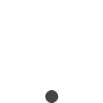

<link rel="import" href="../components/polymer/polymer.html">
<link rel="import" href="../components/core-tooltip/core-tooltip.html">

<polymer-element name="spinner-element">
  <template>
	<style>
		.loader {
		  position: relative;
		  padding-top: 50px;
		  width: 80px;
		  margin: auto;
		}
		.loader .circle {
		  position: absolute;
		  width: 76px;
		  height: 76px;
		  opacity: 0;
		  -webkit-transform: rotate(225deg);
		  -webkit-animation-iteration-count: infinite;
		  -webkit-animation-name: orbit;
		  -webkit-animation-duration: 4.5s;
		}
		.loader .circle:after {
		  content: '';
		  position: absolute;
		  width: 12px;
		  height: 12px;
		  border-radius: 15px;
		  background: #333;
		  /* Pick a color */
		}
		.loader .circle:nth-child(2) {
		  -webkit-animation-delay: 240ms;
		}
		.loader .circle:nth-child(3) {
		  -webkit-animation-delay: 480ms;
		}
		.loader .circle:nth-child(4) {
		  -webkit-animation-delay: 720ms;
		}
		.loader .circle:nth-child(5) {
		  -webkit-animation-delay: 960ms;
		}
		@-webkit-keyframes orbit {
		  0% {
			-webkit-transform: rotate(225deg);
			opacity: 1;
			-webkit-animation-timing-function: ease-out;
		  }
		  7% {
			-webkit-transform: rotate(345deg);
			-webkit-animation-timing-function: linear;
		  }
		  30% {
			-webkit-transform: rotate(455deg);
			-webkit-animation-timing-function: ease-in-out;
		  }
		  39% {
			-webkit-transform: rotate(690deg);
			-webkit-animation-timing-function: linear;
		  }
		  70% {
			-webkit-transform: rotate(815deg);
			opacity: 1;
			-webkit-animation-timing-function: ease-out;
		  }
		  75% {
			-webkit-transform: rotate(945deg);
			-webkit-animation-timing-function: ease-out;
		  }
		  76% {
			-webkit-transform: rotate(945deg);
			opacity: 0;
		  }
		  100% {
			-webkit-transform: rotate(945deg);
			opacity: 0;
		  }
		}
	</style>
	<div layout horizontal center center-justified>
	<!--
		<div >
			
		</div>
	-->
	
		<div class='loader'>
			<div class='circle'></div>
			<div class='circle'></div>
			<div class='circle'></div>
			<div class='circle'></div>
			<div class='circle'></div>
		</div>
	</div>
  </template>
  <script>

    Polymer('spinner-element', {
	  
	  ready: function() {
		  
	  },
	  
    });

  </script>
</polymer-element>